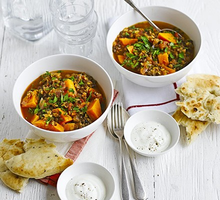

Lentil & sweet potato curry

Description
A storecupboard spiced pot with red and green lentils, chickpeas and coriander
Serve with yogurt and naan bread
Ingredients
- 2 tbsp vegetable or olive oil
- 1 red onion, chopped
- 1 tsb cumin seeds
- 1 tsp mustard seeds (any colour)
- 1 tbsp medium curry powder
- 100g red or green lentil, or a mixture
- 2 medium sweet potatoes, peeled and cut into chunks
- 500ml vegetable stock
- 400g can chopped tomato
- 400g can chickpea, drained
- ¼small pack coriander (optional)
- natural yogurt and naan bread to serve
Steps
- Heat 2 tbsp vegetable or olive oil in a large pan, add 1 chopped red onion and cook for a few mins until softened.
- Add 1 tsp cumin seeds, 1 tsp mustard seeds and 1 tbsp medium curry powdervand cook for 1 min more,
then stir in 100g red or green lentils (or a mixture), 2 medium sweet potatoes, cut into chunks, 500ml vegetable stock and a 400g can chopped omatoes.
- Bring to the boil, then cover and simmer for 20m mins until the lentils and sweet potatoes are tender. Add a drained 400g can chickpeas, then heat through.
- Season, sprinkle with ¼ small pack coriander, if you like, and serve with seasoned yogurt and naan bread.